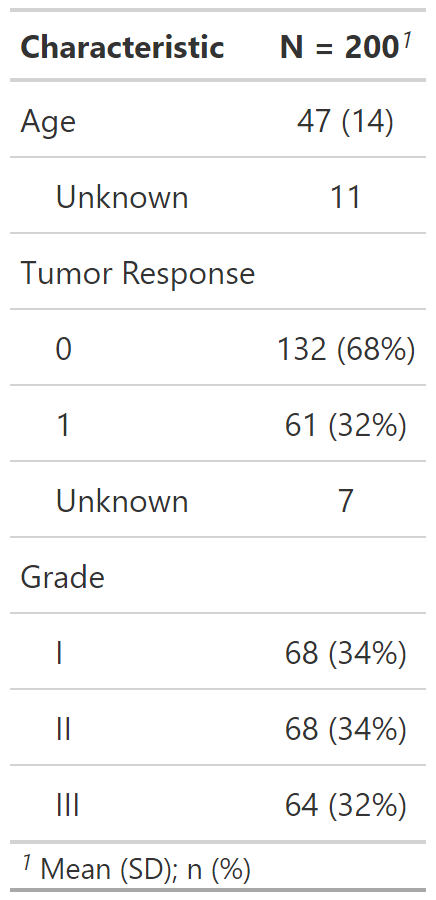

Set of functions to supplement the tidyselect set of functions for selecting columns of data frames (and other items as well).
all_continuous() selects continuous variables
all_continuous2() selects only type "continuous2"
all_categorical() selects categorical (including "dichotomous") variables
all_dichotomous() selects only type "dichotomous"
all_tests() selects variables by the name of the test performed
all_stat_cols() selects columns from tbl_summary/tbl_svysummary object with summary statistics (i.e. "stat_0", "stat_1", "stat_2", etc.)
all_interaction() selects interaction terms from a regression model
all_intercepts() selects intercept terms from a regression model
all_contrasts() selects variables in regression model based on their type of contrast
all_continuous(continuous2 = TRUE) all_continuous2() all_categorical(dichotomous = TRUE) all_dichotomous() all_tests(tests = NULL) all_stat_cols(stat_0 = TRUE) all_interaction() all_intercepts() all_contrasts(contrasts_type = NULL)
| continuous2 | Logical indicating whether to include continuous2 variables. Default is |
|---|---|
| dichotomous | Logical indicating whether to include dichotomous variables.
Default is |
| tests | string indicating the test type of the variables to select, e.g.
select all variables being compared with |
| stat_0 | When |
| contrasts_type | type of contrast to select. When |
A character vector of column names selected
Example 1

select_ex1 <- trial %>% select(age, response, grade) %>% tbl_summary( statistic = all_continuous() ~ "{mean} ({sd})", type = all_dichotomous() ~ "categorical" )